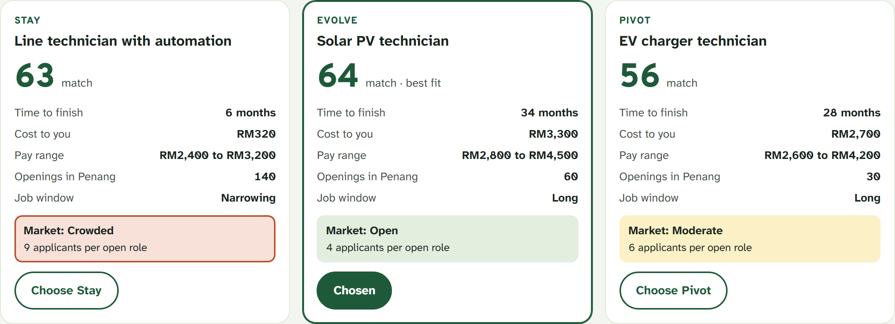
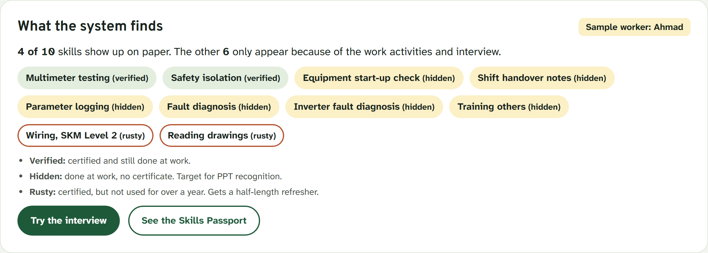
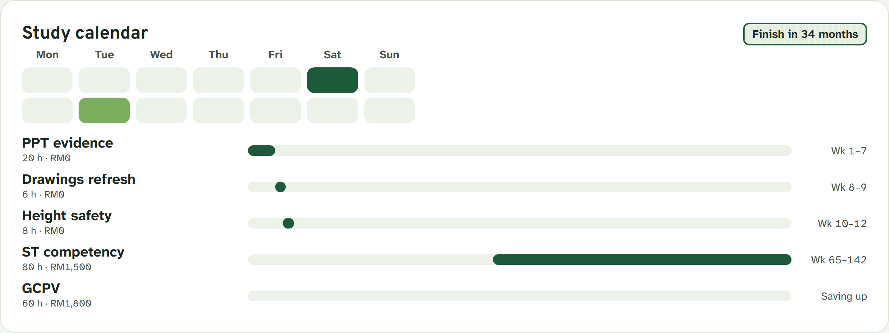
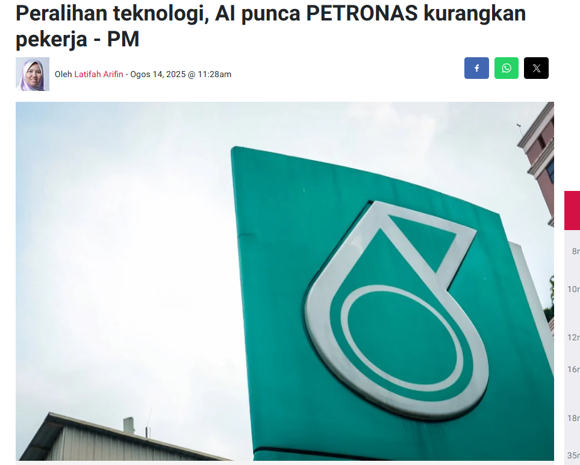

Technicians are worried.
They need a map.
With BijakMatch



Today

Headline: [outlet name], 14 Aug 2025
What a CV shows
Technician · 6 years · 1 certificate
4 of 10 real skills are on paper.
BijakMatch
A career planner for TVET workers. It reads certificates and real daily tasks, then compares Stay, Evolve and Pivot with fixed rules on open government data.
Jobs facing change
620,000
Highly impacted · 10 sectors
Highly impacted620,000
Medium1,800,000
Low980,000
All workersin these 10 sectors3,500,000
TVET learners
439,000
Enrolled · Oct 2025
2023408,767
2024423,267
2025439,000
New entrants2023 only175,780
Counts differ by source and date. Up to 300,000 green jobs are expected by 2050 (NETR).